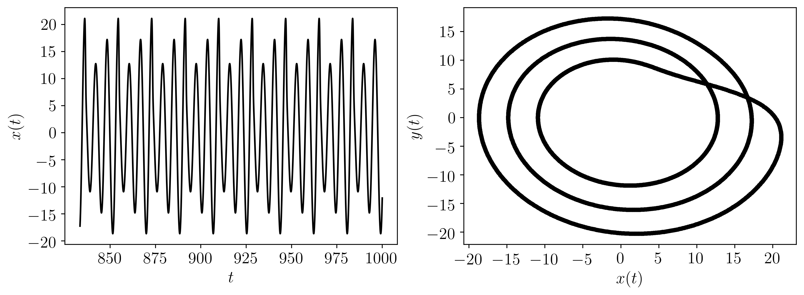

2.1.2. Dynamical Systems Library (DynSysLib)

This page provides a summary of the Dynamical Systems Library (DynSysLib) for simulating a wide variety of dynamical systems.
The following table provides a list of all the available dynamical systems. Further details for each system can be found in the linked directories.
logistic_map |
chua |
driven_pendulum |
driven_van_der_pol_oscillator |
sine |
gaussian_noise |
ECG |
mackey_glass |
henon_map |
lorenz |
shaw_van_der_pol_oscillator |
simplest_driven_chaotic_flow |
incommensurate_sine |
uniform_noise |
EEG |
|
sine_map |
rossler |
forced_brusselator |
nose_hoover_oscillator |
rayleigh_noise |
|||
tent_map |
coupled_lorenz_rossler |
ueda_oscillator |
labyrinth_chaos |
exponential_noise |
|||
linear_congruential_generator_map |
coupled_rossler_rossler |
duffings_two_well_oscillator |
henon_heiles_system |
||||
rickers_population_map |
double_pendulum |
duffing_van_der_pol_oscillator |
|||||
gauss_map |
diffusionless_lorenz_attractor |
rayleigh_duffing_oscillator |
|||||
cusp_map |
complex_butterfly |
||||||
pinchers_map |
chens_system |
||||||
sine_circle_map |
hadley_circulation |
||||||
lozi_map |
ACT_attractor |
||||||
delayed_logstic_map |
rabinovich_frabrikant_attractor |
||||||
tinkerbell_map |
linear_feedback_rigid_body_motion_system |
||||||
burgers_map |
moore_spiegel_oscillator |
||||||
holmes_cubic_map |
thomas_cyclically_symmetric_attractor |
||||||
kaplan_yorke_map |
halvorsens_cyclically_symmetric_attractor |
||||||
ginger_bread_man_map |
burke_shaw_attractor |
||||||
rucklidge_attractor |
|||||||
WINDMI |
|||||||
simplest_quadratic_chaotic_flow |
|||||||
simplest_cubic_chaotic_flow |
|||||||
simplest_piecewise_linear_chaotic_flow |
|||||||
double_scroll |
Of the optional other parameters either the dynamic_state parameter or the system parameters must be used.
The following is a minimal working example using the rossler system:
import matplotlib.pyplot as plt
import matplotlib.gridspec as gridspec
from teaspoon.MakeData.DynSysLib.autonomous_dissipative_flows import rossler
t, ts = rossler(dynamic_state='periodic')
TextSize = 15
plt.figure(figsize = (12,4))
gs = gridspec.GridSpec(1,2)
ax = plt.subplot(gs[0, 0])
plt.xticks(size = TextSize)
plt.yticks(size = TextSize)
plt.ylabel(r'$x(t)$', size = TextSize)
plt.xlabel(r'$t$', size = TextSize)
plt.plot(t,ts[0], 'k')
ax = plt.subplot(gs[0, 1])
plt.plot(ts[0], ts[1],'k.')
plt.plot(ts[0], ts[1],'k', alpha = 0.25)
plt.xticks(size = TextSize)
plt.yticks(size = TextSize)
plt.xlabel(r'$x(t)$', size = TextSize)
plt.ylabel(r'$y(t)$', size = TextSize)
plt.show()
Where the output for this example is:
The following is another example implementing all of the possible inputs (dynamic_state is not needed when parameters are provided):
import matplotlib.pyplot as plt
import matplotlib.gridspec as gridspec
from teaspoon.MakeData.DynSysLib.autonomous_dissipative_flows import rossler
L, fs, SampleSize = 1000, 20, 2000
# the length (in seconds) of the time series, the sample rate, and the sample size of the time series of the simulated system.
parameters = [0.1, 0.2, 13.0] # these are the a, b, and c parameters from the Rossler system model.
InitialConditions = [1.0, 0.0, 0.0] # [x_0, y_0, x_0]
t, ts = rossler(L=L, fs=fs, SampleSize=SampleSize, parameters=parameters, InitialConditions=InitialConditions)
TextSize = 15
plt.figure(figsize = (12,4))
gs = gridspec.GridSpec(1,2)
ax = plt.subplot(gs[0, 0])
plt.xticks(size = TextSize)
plt.yticks(size = TextSize)
plt.ylabel(r'$x(t)$', size = TextSize)
plt.xlabel(r'$t$', size = TextSize)
plt.plot(t,ts[0], 'k')
ax = plt.subplot(gs[0, 1])
plt.plot(ts[0], ts[1],'k.')
plt.plot(ts[0], ts[1],'k', alpha = 0.25)
plt.xticks(size = TextSize)
plt.yticks(size = TextSize)
plt.xlabel(r'$x(t)$', size = TextSize)
plt.ylabel(r'$y(t)$', size = TextSize)
plt.show()
Where the output for this example is: